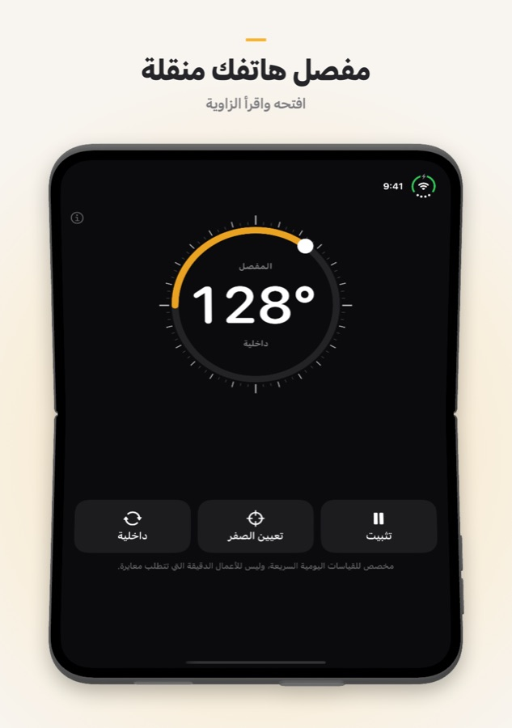
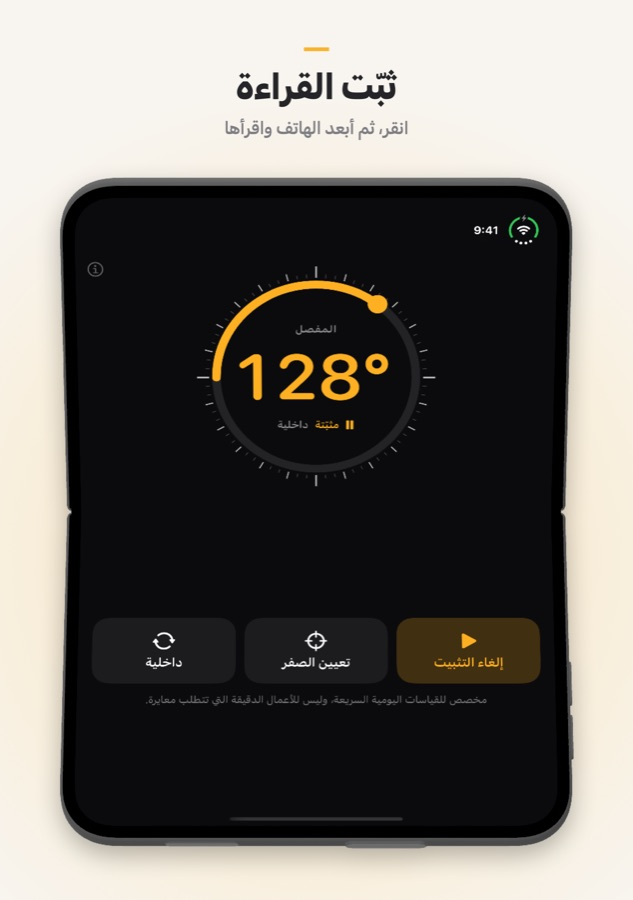
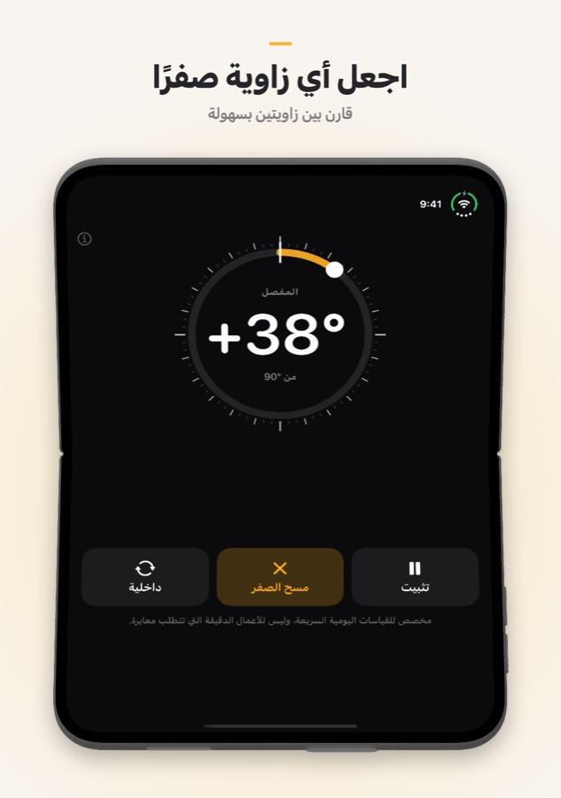

Fold Angle
يعرف iPhone القابل للطي مقدار انفتاحه بالفعل. يحوّل Fold Angle المفصل إلى منقلة: ضع الهاتف في زاوية الغرفة أو على باب أو فوق حافة صندوق، واقرأ الزاوية بين النصفين. وعلى أجهزة iPhone وiPad الأخرى يعمل كمقياس للميل.
يتطلب iOS 17 أو أحدث.
التنزيل


الدعم
هل لديك سؤال، أو وجدت خللًا، أو تحتاج مساعدة في التطبيق؟ تواصل معنا. نقرأ كل رسالة.
الأسئلة الشائعة
- على أي أجهزة يعمل؟
صُمم Fold Angle من أجل iPhone Duo، حيث يقرأ زاوية المفصل مباشرة. وعلى أجهزة iPhone وiPad الأخرى يعمل كمقياس للميل، فيعرض مقدار ميل الجهاز عن المستوى الأفقي باستخدام مستشعرات الحركة. - كيف أحتفظ بالقراءة؟
انقر على تثبيت لتجميد الرقم، ثم أبعد الهاتف واقرأه. انقر على إلغاء التثبيت للعودة إلى القراءة المباشرة. يمكنك أيضًا النقر مرتين على الرقم. - ما وظيفة «تعيين الصفر»؟
يجعل الزاوية الحالية صفرًا جديدًا، لتقارن بين زاويتين أو تقيس مدى انفتاح باب. انقر على مسح الصفر للعودة إلى الزوايا المطلقة. - ما معنى «داخلية» و«خارجية»؟
الداخلية هي الزاوية بين الشاشتين، والخارجية هي الزاوية على ظهر الطيّة (360° ناقص الداخلية). انقر على الزر للتبديل. - عند وضعه على سطح مستوٍ يعرض نحو 2° بدلًا من 0°.
في وضع الميل، يرفع بروز الكاميرا أحد طرفي الهاتف. انقر على تعيين الصفر على السطح المستوي أولًا ثم قِس، أو ضع الهاتف على شاشته. - لا أشعر بالنقرات.
ينقر Fold Angle نقرة خفيفة كل 15° ونقرة قوية عند 90° تمامًا. إن لم تشعر بشيء، فتأكد من تشغيل الإعدادات ← الأصوات والحس اللمسي ← الحس اللمسي للنظام. - ما مدى دقته؟
صُمم للقياسات اليومية السريعة، وليس للأعمال الدقيقة التي تتطلب معايرة. إذا كانت الدقة مهمة، فتحقق بمنقلة أو ميزان حقيقي. - هل يجمع بياناتي؟
لا. لا يحتوي Fold Angle على حساب ولا خوادم، ولا يرسل أي طلبات عبر الشبكة. تبقى قراءات المستشعرات على جهازك.
لقطات الشاشة



قانوني
سياسة الخصوصية
آخر تحديث: أكتوبر 2026
مقدمة
بُني Fold Angle على مبدأ بسيط: بياناتك ملك لك. توضح سياسة الخصوصية هذه المعلومات التي يصل إليها التطبيق وكيفية التعامل معها. باختصار، لا نتلقى أيًا منها.
المستشعرات
يقرأ Fold Angle زاوية المفصل (على iPhone Duo) ومستشعرات الحركة (على الأجهزة الأخرى) فقط لعرض الزاوية على الشاشة. تُعالَج هذه القراءات على جهازك ولا تُخزَّن أو تُرفع أو تُشارَك أبدًا.
لا جمع للبيانات
لا نجمع أي معلومات شخصية أو نخزنها أو نتتبعها أو نعالجها. لا يتطلب التطبيق حسابًا أو أي شكل من أشكال التسجيل.
لا حاجة لاتصال بالإنترنت
يعمل Fold Angle دون اتصال بالكامل، ولا يرسل أي طلبات عبر الشبكة.
عمليات الشراء
تتولى Apple جميع عمليات الشراء بالكامل عبر App Store. لا نتلقى أبدًا معرف Apple الخاص بك أو طريقة الدفع أو أي معلومات دفع أخرى.
خدمات الأطراف الثالثة
لا يستخدم Fold Angle أي خدمات تحليلات أو إعلانات أو تتبع تابعة لأطراف ثالثة. لا تُشارَك أي بيانات مع أي طرف ثالث.
خصوصية الأطفال
نظرًا لعدم جمع أي بيانات شخصية، يتوافق Fold Angle مع قانون حماية خصوصية الأطفال على الإنترنت (COPPA) واللوائح المماثلة حول العالم.
التغييرات على هذه السياسة
قد نحدّث سياسة الخصوصية هذه من وقت لآخر. تسري التغييرات فور نشرها. نشجعك على مراجعة هذه الصفحة بشكل دوري.
تواصل معنا
إذا كانت لديك أي أسئلة حول سياسة الخصوصية هذه، تواصل معنا على: support [at] hoshinosoftware [dot] com
شروط الخدمة
آخر تحديث: أكتوبر 2026
قبول الشروط
بتنزيل Fold Angle أو استخدامه، فإنك توافق على الالتزام بشروط الخدمة هذه. إذا لم توافق، فيرجى عدم استخدام التطبيق.
الترخيص
تمنحك Hoshino Software ترخيصًا شخصيًا وغير قابل للتحويل وغير حصري لاستخدام Fold Angle على أجهزة Apple الخاصة بك وفقًا لهذه الشروط وشروط خدمة App Store من Apple.
الاستخدام المسموح به
يجوز لك استخدام Fold Angle للأغراض المشروعة فقط. وتوافق على عدم استخدام التطبيق بأي طريقة تنتهك القوانين أو اللوائح المعمول بها.
ليس أداة قياس دقيقة
صُمم Fold Angle للقياسات اليومية السريعة. تعتمد القراءات على مستشعرات جهازك وقد تنحرف بدرجة أو أكثر. لا تعتمد عليه حيث قد يؤدي الخطأ إلى أذى أو ضرر أو خسارة.
إخلاء المسؤولية عن الضمانات
يُقدَّم Fold Angle «كما هو» دون أي ضمان من أي نوع، صريحًا كان أو ضمنيًا. لا نضمن أن يكون التطبيق خاليًا من الأخطاء أو دون انقطاع أو مناسبًا لأي غرض معين.
تحديد المسؤولية
إلى أقصى حد يسمح به القانون المعمول به، لن تكون Hoshino Software مسؤولة عن أي أضرار مباشرة أو غير مباشرة أو عرضية أو خاصة أو تبعية ناتجة عن استخدامك لـ Fold Angle أو عدم قدرتك على استخدامه.
التغييرات على هذه الشروط
قد نحدّث شروط الخدمة هذه من وقت لآخر. ويُعد استمرارك في استخدام التطبيق بعد نشر التغييرات قبولًا منك للشروط المعدّلة.
القانون الحاكم
تخضع هذه الشروط لقوانين الولاية القضائية التي تعمل فيها Hoshino Software.
تواصل معنا
إذا كانت لديك أي أسئلة حول شروط الخدمة هذه، تواصل معنا على: support [at] hoshinosoftware [dot] com